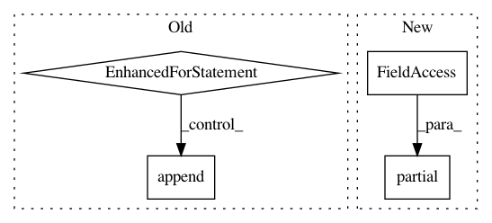

9e622f5cf778243920741f87bae4d49111cf33d5,pyinterpret/core/global_interpretation/partial_dependence.py,PartialDependence,partial_dependence,#PartialDependence#Any#Any#Any#Any#Any#Any#Any#Any#Any#Any#,65
Before Change
// [i for i in range(grid_expanded.shape[0])]):
// pdps.append(pd_row)
for i in range(grid_expanded.shape[0]):
pdps.append(self.compute_pd(grid_expanded, number_of_classes, feature_ids, data_sample_mutable))
//self._pdp_metadata["val_cols"] = ["val_{}".format(i) for i in feature_ids]
// Local variable referenced possible before definition can be diregarded
// since we assert that grid_expanded.shape must be > 0
// if isinstance(mean_prediction, np.ndarray):
// classes = range(mean_prediction.shape[0])
// self._pdp_metadata["pdp_cols"] = {
// class_i: "mean_class_{}".format(class_i) for class_i in classes
// }
// else:
// self._pdp_metadata["pdp_cols"] = {0:"mean"}
//
// self._pdp_metadata["sd_col"] = "sd"
// self.interpreter.logger.debug("PDP df metadata: {}".format(self._pdp_metadata))
return pd.DataFrame(pdps)
def plot_partial_dependence(self, feature_ids, predict_fn, class_id=None,
After Change
// n_classes, feature_ids, data_sample_mutable),
// [i for i in range(grid_expanded.shape[0])]):
p = Pool(4)
for pd_row in p.map(functools.partial(compute_pd, model_fn=model_fn,
grid_expanded=grid_expanded, number_of_classes=n_classes, feature_ids=feature_ids,
input_data=data_sample_mutable), [i for i in range(grid_expanded.shape[0])]):
pdps.append(pd_row)
// for i in range(grid_expanded.shape[0]):
In pattern: SUPERPATTERN
Frequency: 3
Non-data size: 4
Instances
Project Name: datascienceinc/Skater
Commit Name: 9e622f5cf778243920741f87bae4d49111cf33d5
Time: 2017-03-27
Author: pramitchoudhary@ip-172-30-0-2.us-west-2.compute.internal
File Name: pyinterpret/core/global_interpretation/partial_dependence.py
Class Name: PartialDependence
Method Name: partial_dependence
Project Name: dask/dask-image
Commit Name: f9aea094643fb3240193b0bc0f1908d5b84d82ab
Time: 2018-09-30
Author: jakirkham@gmail.com
File Name: dask_image/ndmeasure/__init__.py
Class Name:
Method Name: center_of_mass
Project Name: pytorch/fairseq
Commit Name: cfbf0dddbc2f06b4d2975655a3959d13e5ba6667
Time: 2021-01-21
Author: myleott@fb.com
File Name: tests/test_bmuf.py
Class Name: TestBMUF
Method Name: bmuf_process